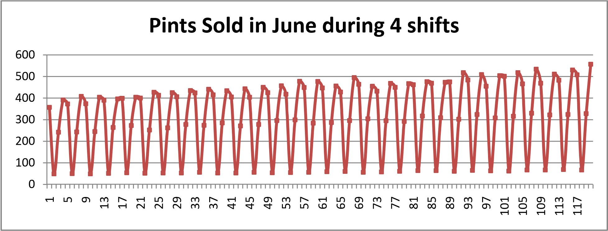
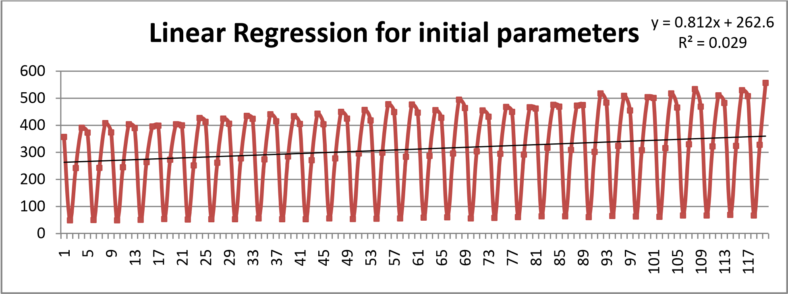

Forecasting with seasonal trends at BLAYK restaurant
Objective
Introduction
You are the lead demand planner for Beers Looking At You, Kid (or BLAYK) a restaurant that features sandwiches, appetizers, and, of course, beer. The restaurant is known for its very fresh beer so the management tries to monitor beer consumption by each shift. You have been tasked to look at how the beer consumption is being forecasted in order to improve the quality and lower the costs of having fresh beer.
There are four shifts in each day the restaurant is open:
Shift 1 from 11 AM to 2 PM
Shift 2 from 2 PM to 5 PM
Shift 3 from 5 PM to 8 PM
Shift 4 from 8 PM to 11 PM
The fields in the spreadsheet are:
Time Period (t) – a sequential numbering of each shift in your data from 1 to 120
Date – the date of the record
Shift Number – the shift number for that record (1, 2, 3, or 4), and
Pints Sold – the number of pints of beer sold on that day during that shift.
Visualization of the raw data

Initial Seasonality Factors
The above diagram clearly points to a seasonality of the sales.
Since at this point it is not very clear as to whether there is a trend in the data or not, we find use two methods to find the seasonality factors.
Assuming no trend
With no trend the seasonality factors (SF) need not be normalized each season.
SF per period = total sales per shift / (total sales per month/no. of periods)
Also
SF per period = total sales per shift / average no. of sales per period
Mathematically we can express it as
\[ F_{t}=\frac{\sum_{t=1}^{n} D}{(\sum_{t=1}^{n} D_{t})/P} \]
Centered Moving Average Method (CMA)
Since each season has 4 periods, we use 4‐point Centered Moving Average. Here since the season has an even number of points. We need to take the moving average of the season from both sides & then take the final average.
Below is a sample of the data used to calculate part of the Fi’s
MATop is the average of Shift 1,2,3 & 4
MABottom is the average of Shift 2,3,4 & 5
MA_Avgi is the average of MATop & MABottom.
Each Fi is the xi/MA_Avgi except the first two & last two of the time series. The first two & last two Fi are calculated by first & the last MA_Avg values respectively.
| Time Period d(t) | Date | Shift Number | Pints Sold, xi | MATop | MABottom | MA_Avg i | Fi |
|---|---|---|---|---|---|---|---|
| 1 | 1‐Jun | 1 | 357 | ||||
| 2 | 1‐Jun | 2 | 49 | ||||
| 3 | 1‐Jun | 3 | 242 | 260 | 264 | 262 | |
| 4 | 1‐Jun | 4 | 391 | 264 | 264 | 264 | |
| 5 | 2‐Jun | 1 | 373 | 264 | 264 | 264 | |
| 6 | 2‐Jun | 2 | 50 | 264 | 269 | 266 | |
| 7 | 2‐Jun | 3 | 243 | 269 | 269 | 269 | |
| 8 | 2‐Jun | 4 | 408 | 269 | 269 | 269 |
Now if the assumption is incorrect & then is a small trend, then the sum of the factors will not add up to number of periods in a season. i.e P = 4 Hence a correction is required in the form and we simply multiply each of your Seasonality Factors by
\[ \frac{P}{\sum_{i=1}^{n} F_{i}} \]
Once all the Fi are calculated, we average them according to Shift Number. The summary is in the table.
| Total Pints Sold | If equal sales per shift, pints per shift sold | Ratio of Sales per shift compared with average | 4‐point Moving Centered Averaged Seasonality Factors | |
|---|---|---|---|---|
| Entire Month | 37423 | |||
| Shift 1 | 13045 | 9356 | 1.39432969 | 1.402007 |
| Shift 2 | 1737 | 9356 | 0.185661224 | 0.185922 |
| Shift 3 | 8700 | 9356 | 0.929909414 | 0.928191 |
| Shift 4 | 13941 | 9356 | 1.490099671 | 1.483154 |
| 4 | 3.999273 |
HoltWinter Model (level+seasonality+trend)
Level & Trend:
Running a linear regression we get the equation.
y = 0.812x + 262.6
From the regression equation we get a level of about 263 pints of beer per shift with an trend of 0.8 additional pints per time period. i.e.
The regression gives you an estimated level of 265 pints per each shift with a trend of 0.80 additional pints per time period. This means that the sales of beer is increasing about 3.2 pints per day. Hence there is a positive trend trend.

Seasonality
This involves estimating the initial values of the level and trend “de‐seasoning” the actual demand by the Seasonality Factors we just found. Part of the data used to calculate the normalized seasonality factors.
| Time Period (t) | Date | Shift Number | Pints Sold | MATop | MABottom | MA_Avg | Fi | SUM of each season | Fi Normalized | Normalized Sum | — |
|---|---|---|---|---|---|---|---|---|---|---|---|
| 1 | 1‐Jun | 1 | 357 | 1.363897 | 3.957406897 | 1.378576309 | 4 | ||||
| 2 | 1‐Jun | 2 | 49 | 0.187202 | 3.957406897 | 0.189216356 | |||||
| 3 | 1‐Jun | 3 | 242 | 260 | 264 | 262 | 0.924546 | 3.957406897 | 0.934497106 | ||
| 4 | 1‐Jun | 4 | 391 | 264 | 264 | 264 | 1.481762 | 3.957406897 | 1.497710229 | ||
| 5 | 2‐Jun | 1 | 373 | 264 | 264 | 264 | 1.41221 | 4.023368199 | 1.404007844 | 4 | |
| 6 | 2‐Jun | 2 | 50 | 264 | 269 | 266 | 0.187705 | 4.023368199 | 0.186615088 | ||
| 7 | 2‐Jun | 3 | 243 | 269 | 269 | 269 | 0.904607 | 4.023368199 | 0.89935273 | ||
| 8 | 2‐Jun | 4 | 408 | 269 | 269 | 269 | 1.518846 | 4.023368199 | 1.510024337 | ||
So taking the average of the all the normalized factors we get,
| Before Normalized | After Normalized | |||
|---|---|---|---|---|
| Fs1 | 1.402007 | 1.402205906 | ||
| Fs2 | 0.185922 | 0.185977102 | ||
| Fs3 | 0.928191 | 0.928395676 | ||
| Fs4 | 1.483154 | 1.483421316 | ||
| SUM | 3.999273 | 4 |
Initial Parameters
Assume that Alpha=0.15, Beta=0.06 & gamma = 0.05
\[ \hat{x}_{t,t+\tau}=(\hat{a}_{t}+\tau\hat{b}_{t})\hat{F}_{t+\tau-P} \] \[ \hat{a}_{t}=\alpha\left(\frac{x_{t}}{\hat{F}_{t-P}}\right)+(1-\alpha)(\hat{a}_{t-1}+\hat{b}_{t-1}) \] \[ \hat{b}_{t}=\beta(\hat{a}_{t}-\hat{a}_{t-1})+(1-\beta)\hat{b}_{t-1} \] \[ \hat{F}_{t}=\gamma \left(\frac{x_{t}}{\hat{a}_{t}}\right)+(1-\gamma)\hat{F}_{t-P} \]
We have for the period 120, the following initial parameters,
| Fs1 | 1.402205906 | |
| Fs2 | 0.185977102 | |
| Fs3 | 0.928395676 | |
| Fs4 | 1.483421316 | |
| \(\hat{a}_{120}\) | 360.04 | 0.812*(120) + 262.6 |
| \(\hat{a}_{120}\) | 0.812 | |
| Alpha | 0.15 | |
| Beta | 0.06 | |
| Gamma | 0.05 |
Using above data we can start forecasting for the coming periods 122 i.e. July 2 Shift 2
| Actual x(t) | \(\hat{a}_{i}\) | \(\hat{b}_{i}\) | \(\hat{F}_{i}\) | \(\hat{x}_{t+4}\) | |
|---|---|---|---|---|---|
| 120 | 557 | 360 | 0.81 | ||
| 121 | 520 | 362.3151378 | 0.900308265 | 1.403856344 | 513.694 (for t=125) |
Using just the 122 forecast, the rest of the periods i.e. 123, 124 & 125 can be calculated using
\[ \hat{x}_{t,t+\tau}=(\hat{a}_{t}+\tau\hat{b}_{t}) \hat{F}_{t+\tau-P} \]
Conclusion
As observed above, the data about beer consumption follows seasonality & has a positive trend. This can be modeled using the Holt‐Winter Model. Of course, error analysis must be done to tweak the model especially the seasonality factors.